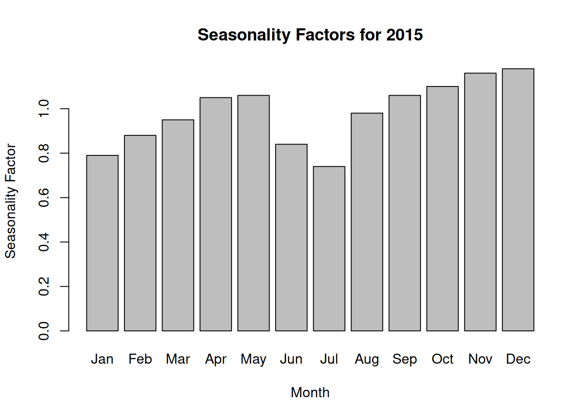

For each candidate policy, run a simulation to estimate performance.
Search over policies to find one that optimizes a target metric:
Minimize expected loan size or probability of negative net worth.
In this case:
We can treat the required minimum cash balance or credit sales fraction as decision variables and search for policies that reduce risk.
6 Case 20.2 – Action Adventures: Narrative Summary
Action Adventures sells a popular line of action figures at $10 per unit to toy stores.
Demand is:
Seasonal (month-by-month seasonality factors).
Random around a “base” level that follows a normal distribution.
Costs include:
Variable production costs per unit.
Fixed monthly manufacturing overhead.
Occasional machine replacement costs.
The firm:
Receives a mix of cash and credit sales.
Maintains a minimum cash balance.
Uses short-term loans when needed.
Pays and earns interest based on a stochastic prime rate.
The goal is to understand cash flow risk and short-term borrowing needs in 2015.
7 Decision Questions in the Case
Build a simulation model and run 1,000 trials for 2015.
Summarize cash flows and loans.
Estimate the distribution of net worth at the end of 2015.
Probability that net worth falls below zero.
Determine the distribution of the largest short-term loan needed during the year.
Recommend a loan limit that is “safe” with high probability.
8 Demand and Seasonality Structure
December 2014 base sales: 6,000 units.
Actual December 2014 sales: (6,000 = 7,080).
For each month in 2015:
Base sales follow a normal distribution with:
Mean = previous month’s base sales.
Standard deviation = 500 units.
Actual sales = base sales × seasonality factor.
You can load the seasonality factors from the case directly into R:
seasonality <-c(Jan =0.79, Feb =0.88, Mar =0.95, Apr =1.05,May =1.06, Jun =0.84, Jul =0.74, Aug =0.98,Sep =1.06, Oct =1.10, Nov =1.16, Dec =1.18)# plot seasonalitybarplot(seasonality, main ="Seasonality Factors for 2015",ylab ="Seasonality Factor", xlab ="Month")

9 Revenue Timing and Credit Policy
Unit selling price: $10 per action figure.
Fraction of sales:
Cash sales: about 40% (varies historically; case uses 42% in December example).
Credit sales: remaining percentage.
The case specifies:
Credit customers pay on a 30-day interest-free basis.
So credit sales in month (t) are collected as cash in month (t+1).
We will treat the cash sales percentage as a fixed parameter in the base model (e.g., 42%), but it can be varied later for sensitivity analysis.
10 Cost Structure
Variable manufacturing cost:
Plastic and materials cost per unit fluctuates between $6 and $8.
Typically modeled as a uniform distribution (U(6, 8)).
Fixed manufacturing cost:
The company incurs $15,000 per month in fixed costs.
Machine failures:
Eight molding machines in total.
Each machine has 10% probability per month of needing a $5,000 replacement part.
You can model this as:
Either a binomial draw rbinom(1, size = 8, prob = 0.10) * 5000,
Or an expected number of failures per month if you want a simpler model.
11 Cash Management Policy
Company policy: minimum cash balance of $20,000 at end of each month.
Starting cash balance (Dec 31, 2014): $25,000.
If projected end-of-month cash <$20,000:
Company takes a one-month bank loan to bring balance up to $20,000.
Loan is repaid with interest at the end of the following month.
Excess cash above $20,000:
Earns savings interest at the savings rate.
Stays in the account and carries forward.
This policy is a key decision rule embedded in the simulation.
12 Interest Rate Dynamics
Loan interest rate and savings rate are both based on the prime rate.
Case assumptions (summarizing the text):
Loan interest rate = Prime + 2 percentage points (with a cap).
Savings interest rate = Prime − 2 percentage points (with a floor).
Prime rate in Dec 2014: 5%.
Each month, prime evolves via a discrete random change, e.g.:
70% chance: no change.
10% chance: +25 basis points.
10% chance: −25 basis points.
5% chance: +50 basis points.
5% chance: −50 basis points.
You can adjust these probabilities/values to match your exact case text.
Estimated probability that net worth < 0 at year-end:
mean(final_net <0)
Recommended “safe” maximum short-term loan:
quantile(max_loan, probs =c(0.90, 0.95, 0.99))
Basic diagnostics plots:
library(ggplot2)ggplot(outcomes, aes(x = final_net)) +geom_histogram(bins =30) +labs(title ="Distribution of Year-End Net Worth",x ="Net Worth", y ="Frequency")ggplot(outcomes, aes(x = max_loan)) +geom_histogram(bins =30) +labs(title ="Distribution of Maximum Monthly Loan", x ="Max Loan")
These plots will let you visually explain risk and tail behavior.
21 Connecting to Simulation Optimization
Once the base model is working, we can treat certain parameters as decision variables:
Minimum cash balance (min_cash).
Cash fraction of sales (cash_frac).
Size of fixed manufacturing cost (e.g., exploring outsourcing vs in-house).
You can loop over policies to compare strategies and present a table of trade-offs.
22 Managerial Interpretation
For the presentation, you should translate numerical results into language the CFO would use:
“With the current policy, there is approximately a X% chance that net worth at the end of 2015 will be negative.”
“To be 95% confident that the company will not exceed its short-term borrowing capacity, we recommend setting the loan limit at approximately $L.”
“Increasing the minimum cash balance from $20,000 to $25,000 reduces the probability of negative net worth from A% to B%, but raises the required loan capacity from $L1 to $L2.”
Include 2–3 plots that clearly show these trade-offs.
23 Limitations and Extensions
Model relies on the assumed distributions; if actual variability is higher or lower, results will change.
No explicit modeling of inventory accumulation or stockouts (we assume production matches demand).
Extensions:
Model demand correlation across months explicitly.
Incorporate inventory and capacity limits.
Optimize pricing or marketing spend jointly with financing policy.
24 Wrap-Up
Monte Carlo simulation lets us see the distribution of financial outcomes under realistic uncertainty.
For Action Adventures, it provides:
Risk measures on year-end net worth.
Required short-term loan capacity.
A platform for exploring alternative cash-management and sales policies.